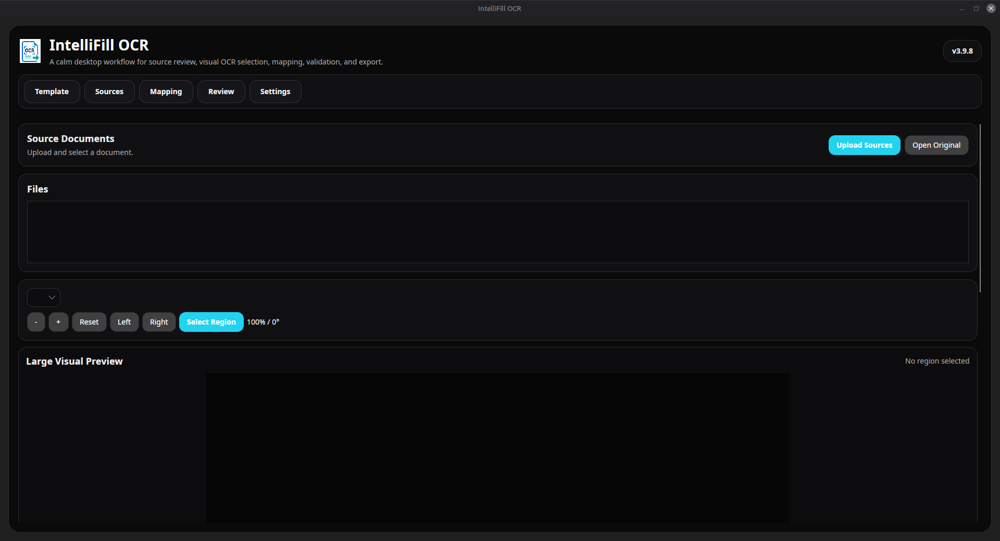
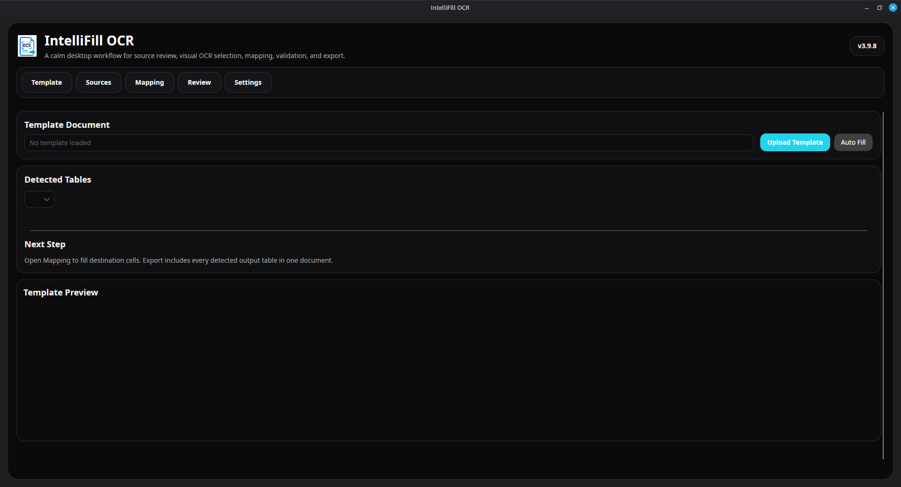
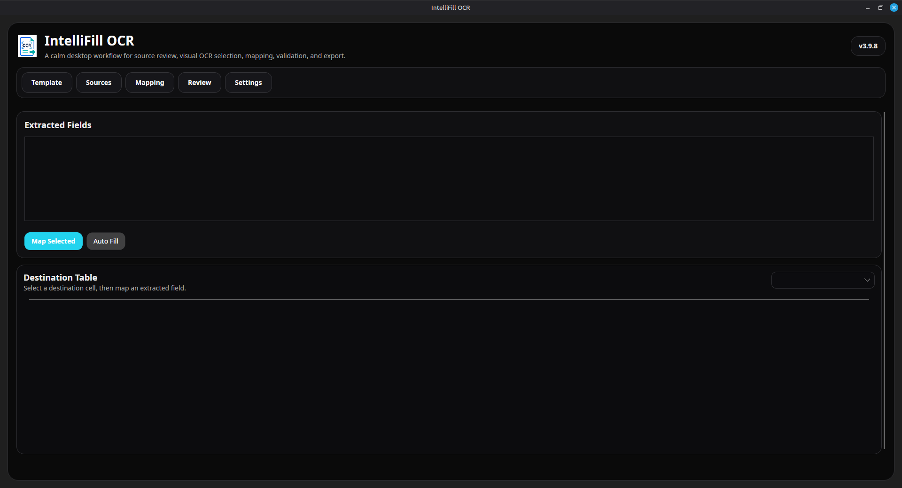
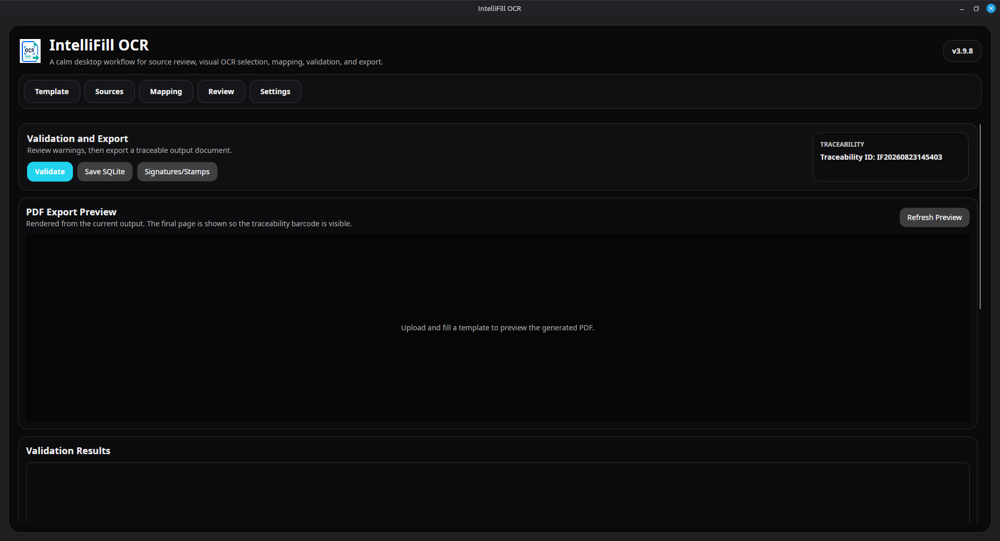
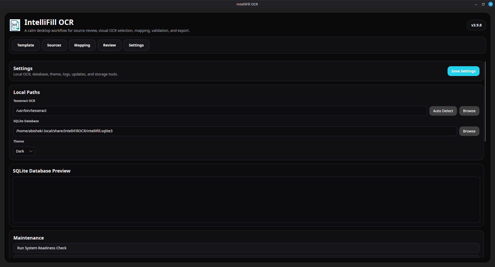
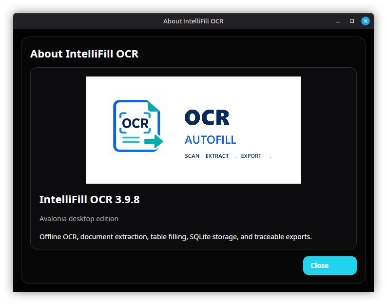
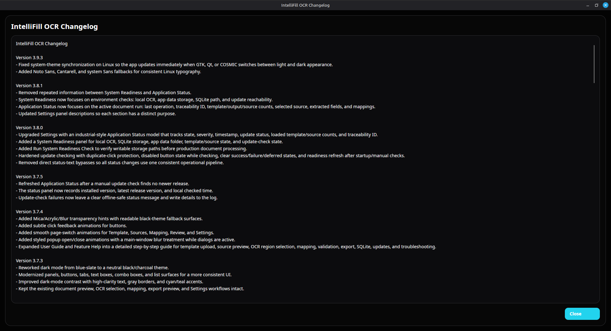
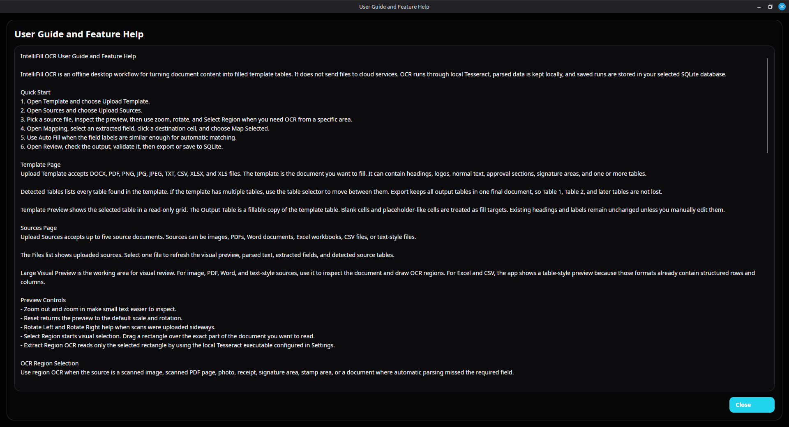
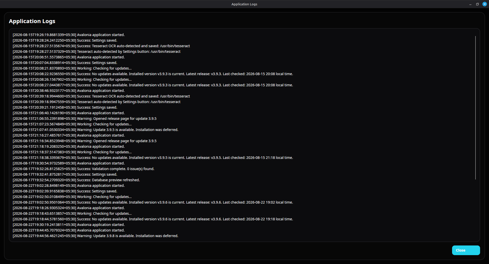

Work offline
OCR, parsing, mapping, and storage run locally. No cloud API is required.
Extract, review, validate, and export document data from one private desktop workspace. Your files stay on your machine.
Checking the latest Windows release…$ intellifill scan invoice.pdf Source invoice.pdf OCR engine Tesseract / local Tables 2 detected Fields 18 matched ━━━━━━━━━━━━━━━━━━━━ 100% ✓ Review ready ✓ Validation passed ✓ Exported to XLSX + PDF
A practical desktop tool for invoices, forms, tables, and repeatable office workflows.
OCR, parsing, mapping, and storage run locally. No cloud API is required.
Preview files, select OCR regions, inspect tables, and edit values before saving.
Validate business data before exporting to CSV, XLSX, DOCX, or PDF.
A native desktop workspace designed for focused document processing. Select an image to view it at full resolution.









Use a spreadsheet, document, PDF, image, or CSV.
Run local text, table, and OCR extraction.
Auto-match, map, and correct extracted values.
Check the result and create final files.
Signed APT and DNF repositories update IntelliFill OCR alongside your system.
Full repository instructions →curl -fsSL https://packages.abishekprabakaran.com/keys/intellifill-ocr-archive-keyring.gpg | sudo gpg --dearmor -o /usr/share/keyrings/intellifill-ocr-archive-keyring.gpg echo "deb [arch=amd64 signed-by=/usr/share/keyrings/intellifill-ocr-archive-keyring.gpg] https://packages.abishekprabakaran.com/apt stable main" | sudo tee /etc/apt/sources.list.d/intellifill-ocr.list sudo apt update && sudo apt install intellifill-ocr
sudo curl -fsSL https://packages.abishekprabakaran.com/intellifill-ocr.repo \ -o /etc/yum.repos.d/intellifill-ocr.repo sudo dnf install intellifill-ocr
Available for Windows and Linux under the GNU GPL v3.0.
{kind=link}
{kind=link}
{kind=link}
{kind=link}
{kind=link}
{kind=link}
{kind=link}
{kind=link}
{kind=link}